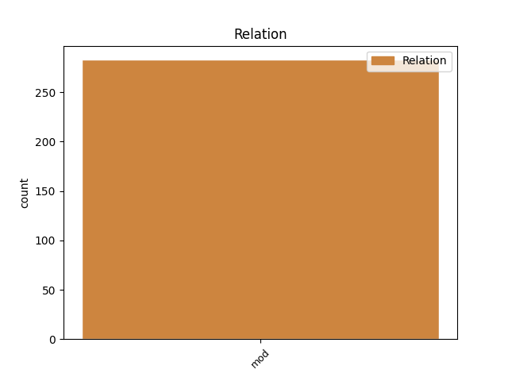
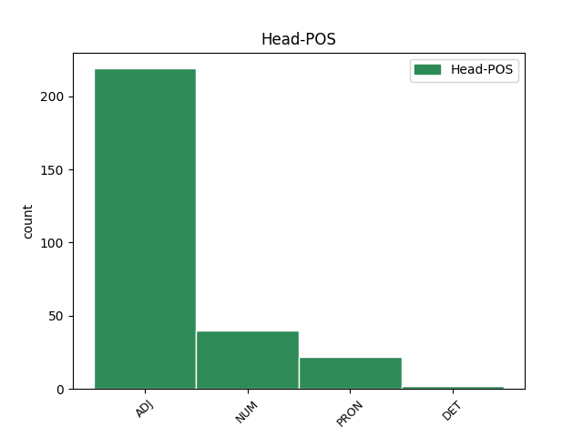
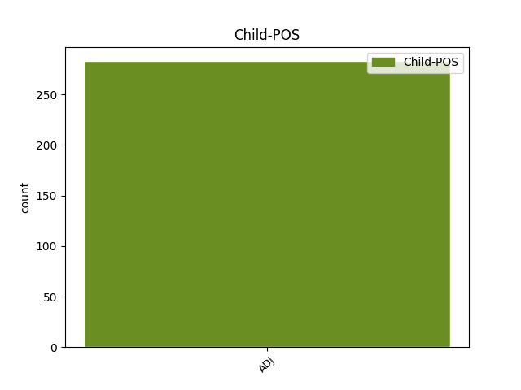

Distribution of features within this leaf



Agreement Rules sorted by frequency.
- When the dependent token is the modifer(mod) of the head token, and the head token is ADJ and the dependent token is ADJ.
1 و _ _ _ _ 0 _ _ _
2 من _ _ _ _ 0 _ _ _
3 المقرر _ _ _ _ 0 _ _ _
4 ان _ _ _ _ 0 _ _ _
5 يعقد _ _ _ _ 0 _ _ _
6 مايرز _ _ _ _ 0 _ _ _
7 وبريمر _ _ _ _ 0 _ _ _
8 اللذان _ _ _ _ 0 _ _ _
9 وصلا _ _ _ _ 0 _ _ _
10 الى _ _ _ _ 0 _ _ _
11 الكويت _ _ _ _ 0 _ _ _
12 قادمين _ _ _ _ 0 _ _ _
13 من _ _ _ _ 0 _ _ _
14 الدوحة _ _ _ _ 0 _ _ _
15 سلسلة _ _ _ _ 0 _ _ _
16 لقاءات _ _ _ _ 0 _ _ _
17 مع _ _ _ _ 0 _ _ _
18 عدد _ _ _ _ 0 _ _ _
19 من _ _ _ _ 0 _ _ _
20 المسؤولين مَسؤُول ADJ A-----MP2D Case=Gen|Definite=Def|Gender=Masc|Number=Plur 0 _ _ _
21 الكويتيين كُوَيتِيّ ADJ A-----MP2D Case=Gen|Definite=Def|Gender=Masc|Number=Plur 20 mod _ Gloss=Kuwaiti|LTranslit=kuwaytīy|Root=k_w_t|Translit=al-kuwaytīyīna|Vform=اَلكُوَيتِيِّينَ
22 اضافة _ _ _ _ 0 _ _ _
23 الى _ _ _ _ 0 _ _ _
24 قيام _ _ _ _ 0 _ _ _
25 هما _ _ _ _ 0 _ _ _
26 ب _ _ _ _ 0 _ _ _
27 تفقد _ _ _ _ 0 _ _ _
28 القوات _ _ _ _ 0 _ _ _
29 الامريكية _ _ _ _ 0 _ _ _
30 في _ _ _ _ 0 _ _ _
31 الكويت _ _ _ _ 0 _ _ _
32 . _ _ _ _ 0 _ _ _
1 22 _ _ _ _ 0 _ _ _
2 يابانيا _ _ _ _ 0 _ _ _
3 كانوا _ _ _ _ 0 _ _ _
4 على _ _ _ _ 0 _ _ _
5 متن _ _ _ _ 0 _ _ _
6 طائرة _ _ _ _ 0 _ _ _
7 ب _ _ _ _ 0 _ _ _
8 ها _ _ _ _ 0 _ _ _
9 مرضى _ _ _ _ 0 _ _ _
10 ب _ _ _ _ 0 _ _ _
11 السارس _ _ _ _ 0 _ _ _
12 لا _ _ _ _ 0 _ _ _
13 يزال _ _ _ _ 0 _ _ _
14 11 _ _ _ _ 0 _ _ _
15 من _ _ _ _ 0 _ _ _
16 هم _ _ _ _ 0 _ _ _
17 غير _ _ _ _ 0 _ _ _
18 متاح _ _ _ _ 0 _ _ _
19 الاتصال _ _ _ _ 0 _ _ _
20 ب _ _ _ _ 0 _ _ _
21 هم _ _ _ _ 0 _ _ _
22 طوكيو _ _ _ _ 0 _ _ _
23 9 _ _ _ _ 0 _ _ _
24 مايو _ _ _ _ 0 _ _ _
25 / _ _ _ _ 0 _ _ _
26 شينخوا _ _ _ _ 0 _ _ _
27 / _ _ _ _ 0 _ _ _
28 ذكرت _ _ _ _ 0 _ _ _
29 وزارة _ _ _ _ 0 _ _ _
30 الخارجية _ _ _ _ 0 _ _ _
31 اليابانية _ _ _ _ 0 _ _ _
32 اليوم _ _ _ _ 0 _ _ _
33 أن _ _ _ _ 0 _ _ _
34 22 _ _ _ _ 0 _ _ _
35 مواطنا _ _ _ _ 0 _ _ _
36 يابانيا _ _ _ _ 0 _ _ _
37 كانوا _ _ _ _ 0 _ _ _
38 على _ _ _ _ 0 _ _ _
39 متن _ _ _ _ 0 _ _ _
40 طائرة _ _ _ _ 0 _ _ _
41 متوجهة _ _ _ _ 0 _ _ _
42 إلى _ _ _ _ 0 _ _ _
43 باريس _ _ _ _ 0 _ _ _
44 فى _ _ _ _ 0 _ _ _
45 الثانى _ _ _ _ 0 _ _ _
46 من _ _ _ _ 0 _ _ _
47 مايو _ _ _ _ 0 _ _ _
48 الجارى _ _ _ _ 0 _ _ _
49 كانت _ _ _ _ 0 _ _ _
50 تحمل _ _ _ _ 0 _ _ _
51 على _ _ _ _ 0 _ _ _
52 متن _ _ _ _ 0 _ _ _
53 ها _ _ _ _ 0 _ _ _
54 اثنين اِثنَان NUM QU----M-4I Case=Acc|Definite=Ind|Gender=Masc|NumForm=Word 0 _ _ _
55 من _ _ _ _ 0 _ _ _
56 الرعايا _ _ _ _ 0 _ _ _
57 الفرنسيين _ _ _ _ 0 _ _ _
58 مصابين مُصَاب ADJ A-----MD4I Case=Acc|Definite=Ind|Gender=Masc|Number=Dual 54 mod _ Gloss=afflicted,injured,wounded|LTranslit=muṣāb|Root=.s_w_b|Translit=muṣābayni|Vform=مُصَابَينِ
59 ب _ _ _ _ 0 _ _ _
60 السارس _ _ _ _ 0 _ _ _
61 ، _ _ _ _ 0 _ _ _
62 وفقا _ _ _ _ 0 _ _ _
63 ل _ _ _ _ 0 _ _ _
64 ما _ _ _ _ 0 _ _ _
65 ذكرت _ _ _ _ 0 _ _ _
66 ه _ _ _ _ 0 _ _ _
67 وكالة _ _ _ _ 0 _ _ _
68 أنباء _ _ _ _ 0 _ _ _
69 كيودو _ _ _ _ 0 _ _ _
70 . _ _ _ _ 0 _ _ _
1 و _ _ _ _ 0 _ _ _
2 ذكر _ _ _ _ 0 _ _ _
3 وزير _ _ _ _ 0 _ _ _
4 الخارجية _ _ _ _ 0 _ _ _
5 أن _ _ _ _ 0 _ _ _
6 حكومة _ _ _ _ 0 _ _ _
7 بنجلاديش _ _ _ _ 0 _ _ _
8 فى _ _ _ _ 0 _ _ _
9 ظل _ _ _ _ 0 _ _ _
10 القيادة _ _ _ _ 0 _ _ _
11 الديناميكية _ _ _ _ 0 _ _ _
12 للبيجوم _ _ _ _ 0 _ _ _
13 خالدة _ _ _ _ 0 _ _ _
14 ضياء _ _ _ _ 0 _ _ _
15 رئيسة _ _ _ _ 0 _ _ _
16 الوزراء _ _ _ _ 0 _ _ _
17 البنجلاديشية _ _ _ _ 0 _ _ _
18 ملتزمة _ _ _ _ 0 _ _ _
19 ب _ _ _ _ 0 _ _ _
20 شدة _ _ _ _ 0 _ _ _
21 ب _ _ _ _ 0 _ _ _
22 توفير _ _ _ _ 0 _ _ _
23 ضروريات _ _ _ _ 0 _ _ _
24 الحياة _ _ _ _ 0 _ _ _
25 الأساسية أَسَاسِيّ ADJ A-----FS2D Case=Gen|Definite=Def|Gender=Fem|Number=Sing 32 mod _ Gloss=basic,fundamental|LTranslit=ʾasāsīy|Root='_s_s|Translit=al-ʾasāsīyati|Vform=اَلأَسَاسِيَّةِ
26 ل _ _ _ _ 0 _ _ _
27 شعب _ _ _ _ 0 _ _ _
28 ها _ _ _ _ 0 _ _ _
29 و _ _ _ _ 0 _ _ _
30 من _ _ _ _ 0 _ _ _
31 بين _ _ _ _ 0 _ _ _
32 ها هُوَ PRON SP---3FS2- Case=Gen|Gender=Fem|Number=Sing|Person=3|PronType=Prs 0 _ _ _
33 الرعاية _ _ _ _ 0 _ _ _
34 الطبية _ _ _ _ 0 _ _ _
35 ، _ _ _ _ 0 _ _ _
36 و _ _ _ _ 0 _ _ _
37 خاصة _ _ _ _ 0 _ _ _
38 الرعاية _ _ _ _ 0 _ _ _
39 الصحية _ _ _ _ 0 _ _ _
40 الأساسية _ _ _ _ 0 _ _ _
41 . _ _ _ _ 0 _ _ _
1 هذا _ _ _ _ 0 _ _ _
2 الرصيد _ _ _ _ 0 _ _ _
3 الفلسطيني _ _ _ _ 0 _ _ _
4 ب _ _ _ _ 0 _ _ _
5 إنجازات _ _ _ _ 0 _ _ _
6 ه _ _ _ _ 0 _ _ _
7 الجادة _ _ _ _ 0 _ _ _
8 ، _ _ _ _ 0 _ _ _
9 خصوصا _ _ _ _ 0 _ _ _
10 في _ _ _ _ 0 _ _ _
11 " _ _ _ _ 0 _ _ _
12 الشارع _ _ _ _ 0 _ _ _
13 " _ _ _ _ 0 _ _ _
14 الاوروبي _ _ _ _ 0 _ _ _
15 و _ _ _ _ 0 _ _ _
16 حتى _ _ _ _ 0 _ _ _
17 الاميركي _ _ _ _ 0 _ _ _
18 اذا _ _ _ _ 0 _ _ _
19 رُصدت _ _ _ _ 0 _ _ _
20 بعض _ _ _ _ 0 _ _ _
21 الظواهر _ _ _ _ 0 _ _ _
22 الحالية _ _ _ _ 0 _ _ _
23 ب _ _ _ _ 0 _ _ _
24 دقة _ _ _ _ 0 _ _ _
25 رغم _ _ _ _ 0 _ _ _
26 اجواء _ _ _ _ 0 _ _ _
27 ما _ _ _ _ 0 _ _ _
28 بعد _ _ _ _ 0 _ _ _
29 11 _ _ _ _ 0 _ _ _
30 ايلول _ _ _ _ 0 _ _ _
31 ، _ _ _ _ 0 _ _ _
32 ك _ _ _ _ 0 _ _ _
33 موجات _ _ _ _ 0 _ _ _
34 الاعتراض _ _ _ _ 0 _ _ _
35 في _ _ _ _ 0 _ _ _
36 الجامعات _ _ _ _ 0 _ _ _
37 الاميركية _ _ _ _ 0 _ _ _
38 ضد _ _ _ _ 0 _ _ _
39 السياسة _ _ _ _ 0 _ _ _
40 الاسرائيلية _ _ _ _ 0 _ _ _
41 . _ _ _ _ 0 _ _ _
42 . _ _ _ _ 0 _ _ _
43 . _ _ _ _ 0 _ _ _
44 هذا _ _ _ _ 0 _ _ _
45 الرصيد _ _ _ _ 0 _ _ _
46 الفلسطيني _ _ _ _ 0 _ _ _
47 ليس _ _ _ _ 0 _ _ _
48 قادرا _ _ _ _ 0 _ _ _
49 على _ _ _ _ 0 _ _ _
50 التحول _ _ _ _ 0 _ _ _
51 الى _ _ _ _ 0 _ _ _
52 رصيد _ _ _ _ 0 _ _ _
53 حيوي _ _ _ _ 0 _ _ _
54 فكري _ _ _ _ 0 _ _ _
55 و _ _ _ _ 0 _ _ _
56 سياسي _ _ _ _ 0 _ _ _
57 لـ _ _ _ _ 0 _ _ _
58 " _ _ _ _ 0 _ _ _
59 الوطنية _ _ _ _ 0 _ _ _
60 العربية _ _ _ _ 0 _ _ _
61 " _ _ _ _ 0 _ _ _
62 في _ _ _ _ 0 _ _ _
63 رؤية _ _ _ _ 0 _ _ _
64 ها _ _ _ _ 0 _ _ _
65 ل _ _ _ _ 0 _ _ _
66 الصراع _ _ _ _ 0 _ _ _
67 في _ _ _ _ 0 _ _ _
68 العراق _ _ _ _ 0 _ _ _
69 . _ _ _ _ 0 _ _ _
70 و _ _ _ _ 0 _ _ _
71 أحد _ _ _ _ 0 _ _ _
72 تفسيرات _ _ _ _ 0 _ _ _
73 الهوة _ _ _ _ 0 _ _ _
74 القائمة _ _ _ _ 0 _ _ _
75 ، _ _ _ _ 0 _ _ _
76 ان _ _ _ _ 0 _ _ _
77 الحضور _ _ _ _ 0 _ _ _
78 الشديد _ _ _ _ 0 _ _ _
79 الوطأة _ _ _ _ 0 _ _ _
80 لـ _ _ _ _ 0 _ _ _
81 " _ _ _ _ 0 _ _ _
82 نظام _ _ _ _ 0 _ _ _
83 سياسي _ _ _ _ 0 _ _ _
84 " _ _ _ _ 0 _ _ _
85 حاكم _ _ _ _ 0 _ _ _
86 و _ _ _ _ 0 _ _ _
87 ذي ذُو DET SD----MS2- Case=Gen|Gender=Masc|Number=Sing|PronType=Dem 0 _ _ _
88 ماض مَاضِي ADJ A-----MS2I Case=Gen|Definite=Ind|Gender=Masc|Number=Sing 87 mod _ Gloss=bygone,past|LTranslit=māḍī|Root=m_.d_y|Translit=māḍin|Vform=مَاضٍ
89 ثقيل _ _ _ _ 0 _ _ _
90 في _ _ _ _ 0 _ _ _
91 المسألة _ _ _ _ 0 _ _ _
92 العراقية _ _ _ _ 0 _ _ _
93 ، _ _ _ _ 0 _ _ _
94 بين _ _ _ _ 0 _ _ _
95 ما _ _ _ _ 0 _ _ _
96 لا _ _ _ _ 0 _ _ _
97 يقف _ _ _ _ 0 _ _ _
98 " _ _ _ _ 0 _ _ _
99 النظام _ _ _ _ 0 _ _ _
100 الفلسطيني _ _ _ _ 0 _ _ _
101 " _ _ _ _ 0 _ _ _
102 ، _ _ _ _ 0 _ _ _
103 ب _ _ _ _ 0 _ _ _
104 ما _ _ _ _ 0 _ _ _
105 هو _ _ _ _ 0 _ _ _
106 اجهزة _ _ _ _ 0 _ _ _
107 و _ _ _ _ 0 _ _ _
108 مؤسسات _ _ _ _ 0 _ _ _
109 حكم _ _ _ _ 0 _ _ _
110 داخلي _ _ _ _ 0 _ _ _
111 ب _ _ _ _ 0 _ _ _
112 المعنى _ _ _ _ 0 _ _ _
113 العربي _ _ _ _ 0 _ _ _
114 ، _ _ _ _ 0 _ _ _
115 في _ _ _ _ 0 _ _ _
116 واجهة _ _ _ _ 0 _ _ _
117 الصراع _ _ _ _ 0 _ _ _
118 ، _ _ _ _ 0 _ _ _
119 بل _ _ _ _ 0 _ _ _
120 يقف _ _ _ _ 0 _ _ _
121 الآن _ _ _ _ 0 _ _ _
122 كـ _ _ _ _ 0 _ _ _
123 " _ _ _ _ 0 _ _ _
124 تنظيم _ _ _ _ 0 _ _ _
125 " _ _ _ _ 0 _ _ _
126 ل _ _ _ _ 0 _ _ _
127 المواجهة _ _ _ _ 0 _ _ _
128 . _ _ _ _ 0 _ _ _
129 . _ _ _ _ 0 _ _ _
130 . _ _ _ _ 0 _ _ _
131 اكثر _ _ _ _ 0 _ _ _
132 من _ _ _ _ 0 _ _ _
133 ما _ _ _ _ 0 _ _ _
134 هو _ _ _ _ 0 _ _ _
135 " _ _ _ _ 0 _ _ _
136 نظام _ _ _ _ 0 _ _ _
137 " _ _ _ _ 0 _ _ _
138 خلافا _ _ _ _ 0 _ _ _
139 ل _ _ _ _ 0 _ _ _
140 ما _ _ _ _ 0 _ _ _
141 كاد _ _ _ _ 0 _ _ _
142 يصبح _ _ _ _ 0 _ _ _
143 " _ _ _ _ 0 _ _ _
144 نظاما _ _ _ _ 0 _ _ _
145 عربيا _ _ _ _ 0 _ _ _
146 آخر _ _ _ _ 0 _ _ _
147 " _ _ _ _ 0 _ _ _
148 في _ _ _ _ 0 _ _ _
149 سنوات _ _ _ _ 0 _ _ _
150 " _ _ _ _ 0 _ _ _
151 الاسترخاء _ _ _ _ 0 _ _ _
152 " _ _ _ _ 0 _ _ _
153 الخادعة _ _ _ _ 0 _ _ _
154 بعد _ _ _ _ 0 _ _ _
155 البدء _ _ _ _ 0 _ _ _
156 ب _ _ _ _ 0 _ _ _
157 تطبيق _ _ _ _ 0 _ _ _
158 اتفاق _ _ _ _ 0 _ _ _
159 اوسلو _ _ _ _ 0 _ _ _
160 في _ _ _ _ 0 _ _ _
161 التسعينات _ _ _ _ 0 _ _ _
162 . _ _ _ _ 0 _ _ _
Disagree Examples:
1 1979 _ _ _ _ 0 _ _ _
2 - _ _ _ _ 0 _ _ _
3 نيكاراغوا _ _ _ _ 0 _ _ _
4 : _ _ _ _ 0 _ _ _
5 الجنرال _ _ _ _ 0 _ _ _
6 سوموزا _ _ _ _ 0 _ _ _
7 يتخلى _ _ _ _ 0 _ _ _
8 عن _ _ _ _ 0 _ _ _
9 الحكم _ _ _ _ 0 _ _ _
10 بعد _ _ _ _ 0 _ _ _
11 معارك _ _ _ _ 0 _ _ _
12 استمرت _ _ _ _ 0 _ _ _
13 خمسة _ _ _ _ 0 _ _ _
14 اسابيع _ _ _ _ 0 _ _ _
15 ضد _ _ _ _ 0 _ _ _
16 الساندينيين _ _ _ _ 0 _ _ _
17 و _ _ _ _ 0 _ _ _
18 أسفرت _ _ _ _ 0 _ _ _
19 عن _ _ _ _ 0 _ _ _
20 مقتل _ _ _ _ 0 _ _ _
21 حوالي _ _ _ _ 0 _ _ _
22 40 _ _ _ _ 0 _ _ _
23 الف أَلف NUM QM-----S4R Case=Acc|Definite=Cons|Number=Sing|NumForm=Word 0 _ _ _
24 مدني مَدَنِيّ ADJ A-----MS2I Case=Gen|Definite=Ind|Gender=Masc|Number=Sing 23 mod _ Gloss=civilian|LTranslit=madanīy|Root=m_d_n|SpaceAfter=No|Translit=madanīyin|Vform=مَدَنِيٍّ
25 . _ _ _ _ 0 _ _ _
1 و _ _ _ _ 0 _ _ _
2 رأى _ _ _ _ 0 _ _ _
3 بيلين _ _ _ _ 0 _ _ _
4 أن _ _ _ _ 0 _ _ _
5 ه _ _ _ _ 0 _ _ _
6 يمكن _ _ _ _ 0 _ _ _
7 التوصل _ _ _ _ 0 _ _ _
8 ب _ _ _ _ 0 _ _ _
9 نجاح _ _ _ _ 0 _ _ _
10 الى _ _ _ _ 0 _ _ _
11 اتفاق _ _ _ _ 0 _ _ _
12 ب _ _ _ _ 0 _ _ _
13 مساعدة _ _ _ _ 0 _ _ _
14 المبعوث _ _ _ _ 0 _ _ _
15 الاميركي _ _ _ _ 0 _ _ _
16 دنيس _ _ _ _ 0 _ _ _
17 روس _ _ _ _ 0 _ _ _
18 الذي _ _ _ _ 0 _ _ _
19 ينتظر _ _ _ _ 0 _ _ _
20 وصول _ _ _ _ 0 _ _ _
21 ه _ _ _ _ 0 _ _ _
22 الى _ _ _ _ 0 _ _ _
23 اسرائيل _ _ _ _ 0 _ _ _
24 في _ _ _ _ 0 _ _ _
25 20 _ _ _ _ 0 _ _ _
26 اب _ _ _ _ 0 _ _ _
27 / _ _ _ _ 0 _ _ _
28 اغسطس _ _ _ _ 0 _ _ _
29 على _ _ _ _ 0 _ _ _
30 ان _ _ _ _ 0 _ _ _
31 توضع _ _ _ _ 0 _ _ _
32 لمسات _ _ _ _ 0 _ _ _
33 ه هُوَ PRON SP---3MS2- Case=Gen|Gender=Masc|Number=Sing|Person=3|PronType=Prs 0 _ _ _
34 الاخيرة أَخِير ADJ A-----FS1D Case=Nom|Definite=Def|Gender=Fem|Number=Sing 33 mod _ Gloss=last,latest,latter,recent|LTranslit=ʾaḫīr|Root='__h_r|Translit=al-ʾaḫīratu|Vform=اَلأَخِيرَةُ
35 فى _ _ _ _ 0 _ _ _
36 قمة _ _ _ _ 0 _ _ _
37 جديدة _ _ _ _ 0 _ _ _
38 " _ _ _ _ 0 _ _ _
39 لن _ _ _ _ 0 _ _ _
40 تطول _ _ _ _ 0 _ _ _
41 اكثر _ _ _ _ 0 _ _ _
42 من _ _ _ _ 0 _ _ _
43 يوم _ _ _ _ 0 _ _ _
44 او _ _ _ _ 0 _ _ _
45 يومين _ _ _ _ 0 _ _ _
46 " _ _ _ _ 0 _ _ _
47 . _ _ _ _ 0 _ _ _
1 و _ _ _ _ 0 _ _ _
2 دخلت _ _ _ _ 0 _ _ _
3 المانيا _ _ _ _ 0 _ _ _
4 في _ _ _ _ 0 _ _ _
5 نفق _ _ _ _ 0 _ _ _
6 مظلم _ _ _ _ 0 _ _ _
7 بعد _ _ _ _ 0 _ _ _
8 خروج _ _ _ _ 0 _ _ _
9 ها _ _ _ _ 0 _ _ _
10 المذل _ _ _ _ 0 _ _ _
11 من _ _ _ _ 0 _ _ _
12 الدور _ _ _ _ 0 _ _ _
13 الاول _ _ _ _ 0 _ _ _
14 ل _ _ _ _ 0 _ _ _
15 نهائيات _ _ _ _ 0 _ _ _
16 كأس _ _ _ _ 0 _ _ _
17 الامم _ _ _ _ 0 _ _ _
18 الاوروبية _ _ _ _ 0 _ _ _
19 في _ _ _ _ 0 _ _ _
20 بلجيكا _ _ _ _ 0 _ _ _
21 و _ _ _ _ 0 _ _ _
22 هولندا _ _ _ _ 0 _ _ _
23 في _ _ _ _ 0 _ _ _
24 حزيران _ _ _ _ 0 _ _ _
25 / _ _ _ _ 0 _ _ _
26 يونيو _ _ _ _ 0 _ _ _
27 الماضي _ _ _ _ 0 _ _ _
28 و _ _ _ _ 0 _ _ _
29 هي _ _ _ _ 0 _ _ _
30 حاملة _ _ _ _ 0 _ _ _
31 اللقب _ _ _ _ 0 _ _ _
32 قبل _ _ _ _ 0 _ _ _
33 4 _ _ _ _ 0 _ _ _
34 سنوات _ _ _ _ 0 _ _ _
35 خصوصا _ _ _ _ 0 _ _ _
36 اثر _ _ _ _ 0 _ _ _
37 خسارة _ _ _ _ 0 _ _ _
38 ها _ _ _ _ 0 _ _ _
39 امام _ _ _ _ 0 _ _ _
40 البرتغال _ _ _ _ 0 _ _ _
41 صفر _ _ _ _ 0 _ _ _
42 - _ _ _ _ 0 _ _ _
43 3 _ _ _ _ 0 _ _ _
44 علما _ _ _ _ 0 _ _ _
45 ب _ _ _ _ 0 _ _ _
46 أن _ _ _ _ 0 _ _ _
47 الاخيرة _ _ _ _ 0 _ _ _
48 اراحت _ _ _ _ 0 _ _ _
49 ابرز _ _ _ _ 0 _ _ _
50 نجوم _ _ _ _ 0 _ _ _
51 ها _ _ _ _ 0 _ _ _
52 و _ _ _ _ 0 _ _ _
53 على _ _ _ _ 0 _ _ _
54 رأس _ _ _ _ 0 _ _ _
55 هم _ _ _ _ 0 _ _ _
56 لويس _ _ _ _ 0 _ _ _
57 فيغو _ _ _ _ 0 _ _ _
58 اغلى أَغلَى ADJ A-----MS1R Case=Nom|Definite=Cons|Gender=Masc|Number=Sing 0 _ _ _
59 لاعب _ _ _ _ 0 _ _ _
60 في _ _ _ _ 0 _ _ _
61 العالم _ _ _ _ 0 _ _ _
62 حاليا حَالِيّ ADJ A-----MS4I Case=Acc|Definite=Ind|Gender=Masc|Number=Sing 58 mod _ Gloss=current,present|LTranslit=ḥālīy|Root=.h_w_l|SpaceAfter=No|Translit=ḥālīyan|Vform=حَالِيًّا
63 . _ _ _ _ 0 _ _ _
1 و _ _ _ _ 0 _ _ _
2 يعتبر _ _ _ _ 0 _ _ _
3 " _ _ _ _ 0 _ _ _
4 فوكس _ _ _ _ 0 _ _ _
5 تيليفيجين _ _ _ _ 0 _ _ _
6 " _ _ _ _ 0 _ _ _
7 اكبر أَكبَر ADJ A-----MS4R Case=Acc|Definite=Cons|Gender=Masc|Number=Sing 0 _ _ _
8 رابع رَابِع ADJ A-----MS2R Case=Gen|Definite=Cons|Gender=Masc|Number=Sing 7 mod _ Gloss=fourth|LTranslit=rābiʿ|Root=r_b_`|Translit=rābiʿi|Vform=رَابِعِ
9 شبكة _ _ _ _ 0 _ _ _
10 تلفزيون _ _ _ _ 0 _ _ _
11 اميركية _ _ _ _ 0 _ _ _
12 ، _ _ _ _ 0 _ _ _
13 الى _ _ _ _ 0 _ _ _
14 جانب _ _ _ _ 0 _ _ _
15 اي _ _ _ _ 0 _ _ _
16 . _ _ _ _ 0 _ _ _
17 بي _ _ _ _ 0 _ _ _
18 . _ _ _ _ 0 _ _ _
19 سي _ _ _ _ 0 _ _ _
20 ( _ _ _ _ 0 _ _ _
21 مجموعة _ _ _ _ 0 _ _ _
22 والت _ _ _ _ 0 _ _ _
23 ديزني _ _ _ _ 0 _ _ _
24 ) _ _ _ _ 0 _ _ _
25 ، _ _ _ _ 0 _ _ _
26 و _ _ _ _ 0 _ _ _
27 إن _ _ _ _ 0 _ _ _
28 . _ _ _ _ 0 _ _ _
29 بي _ _ _ _ 0 _ _ _
30 . _ _ _ _ 0 _ _ _
31 سي _ _ _ _ 0 _ _ _
32 ( _ _ _ _ 0 _ _ _
33 جنرال _ _ _ _ 0 _ _ _
34 اليكتريك _ _ _ _ 0 _ _ _
35 ) _ _ _ _ 0 _ _ _
36 و _ _ _ _ 0 _ _ _
37 سي _ _ _ _ 0 _ _ _
38 . _ _ _ _ 0 _ _ _
39 بي _ _ _ _ 0 _ _ _
40 . _ _ _ _ 0 _ _ _
41 اس _ _ _ _ 0 _ _ _
42 ( _ _ _ _ 0 _ _ _
43 فياكوم _ _ _ _ 0 _ _ _
44 ) _ _ _ _ 0 _ _ _
45 . _ _ _ _ 0 _ _ _
46 و _ _ _ _ 0 _ _ _
47 يمتلك _ _ _ _ 0 _ _ _
48 ايضا _ _ _ _ 0 _ _ _
49 قناة _ _ _ _ 0 _ _ _
50 اخبارية _ _ _ _ 0 _ _ _
51 متواصلة _ _ _ _ 0 _ _ _
52 تحمل _ _ _ _ 0 _ _ _
53 اسم _ _ _ _ 0 _ _ _
54 " _ _ _ _ 0 _ _ _
55 فوكس _ _ _ _ 0 _ _ _
56 نيوز _ _ _ _ 0 _ _ _
57 " _ _ _ _ 0 _ _ _
58 تنافس _ _ _ _ 0 _ _ _
59 شبكة _ _ _ _ 0 _ _ _
60 سي _ _ _ _ 0 _ _ _
61 . _ _ _ _ 0 _ _ _
62 ان _ _ _ _ 0 _ _ _
63 . _ _ _ _ 0 _ _ _
64 ان _ _ _ _ 0 _ _ _
65 في _ _ _ _ 0 _ _ _
66 الولايات _ _ _ _ 0 _ _ _
67 المتحدة _ _ _ _ 0 _ _ _
68 . _ _ _ _ 0 _ _ _
1 و _ _ _ _ 0 _ _ _
2 أعلنت _ _ _ _ 0 _ _ _
3 حكومة _ _ _ _ 0 _ _ _
4 مانيلا _ _ _ _ 0 _ _ _
5 أن _ _ _ _ 0 _ _ _
6 ه _ _ _ _ 0 _ _ _
7 من _ _ _ _ 0 _ _ _
8 الممكن _ _ _ _ 0 _ _ _
9 ان _ _ _ _ 0 _ _ _
10 يفرج _ _ _ _ 0 _ _ _
11 غدا _ _ _ _ 0 _ _ _
12 الاربعاء _ _ _ _ 0 _ _ _
13 عن _ _ _ _ 0 _ _ _
14 الرهائن _ _ _ _ 0 _ _ _
15 المحتجزين _ _ _ _ 0 _ _ _
16 في _ _ _ _ 0 _ _ _
17 جولو _ _ _ _ 0 _ _ _
18 جنوب _ _ _ _ 0 _ _ _
19 الفيليبين _ _ _ _ 0 _ _ _
20 و _ _ _ _ 0 _ _ _
21 بين _ _ _ _ 0 _ _ _
22 هم _ _ _ _ 0 _ _ _
23 تسعة تِسعَة NUM QV----M-1R Case=Nom|Definite=Cons|Gender=Masc|NumForm=Word|NumValue=3 0 _ _ _
24 غربيين غَربِيّ ADJ A-----MP2I Case=Gen|Definite=Ind|Gender=Masc|Number=Plur 23 mod _ Gloss=Occidental,west,western|LTranslit=ġarbīy|Root=.g_r_b|SpaceAfter=No|Translit=ġarbīyīna|Vform=غَربِيِّينَ
25 . _ _ _ _ 0 _ _ _